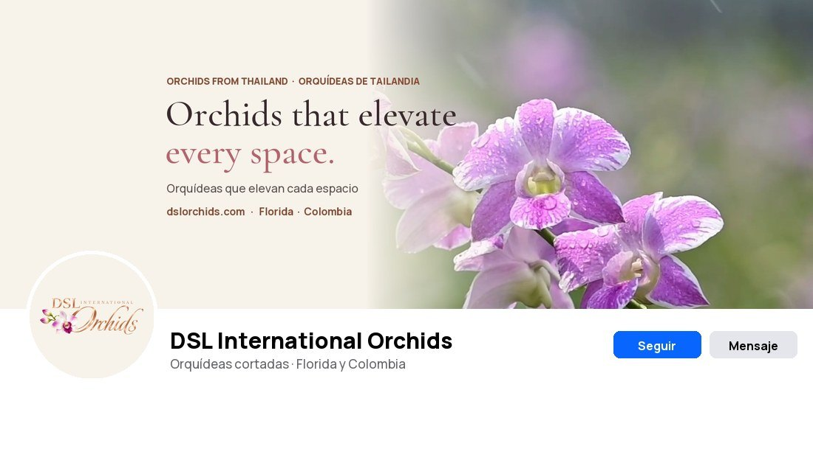
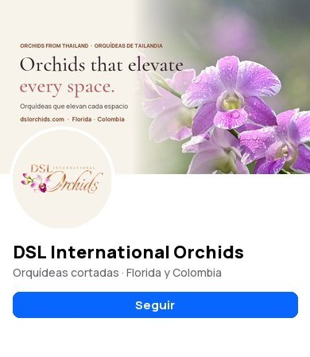
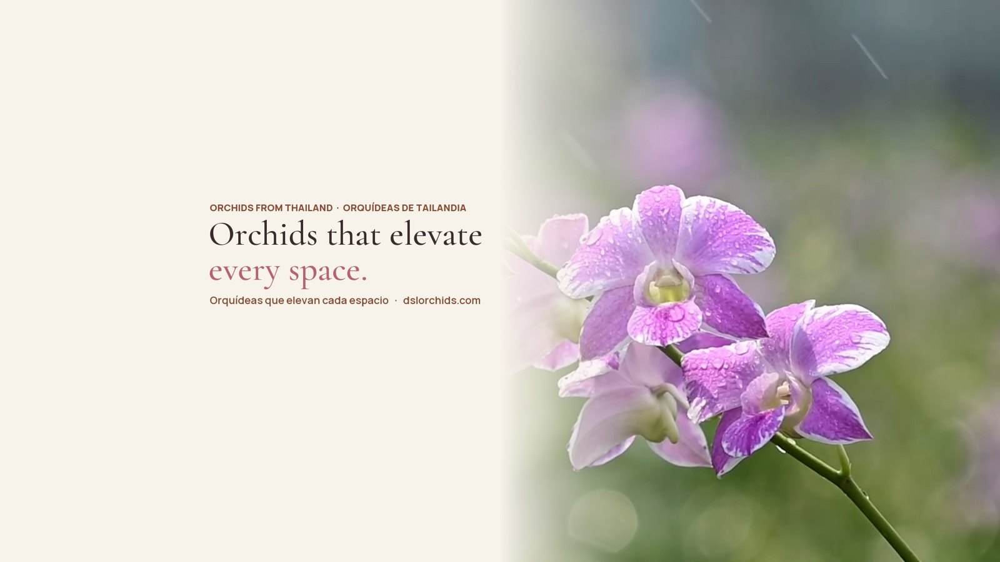
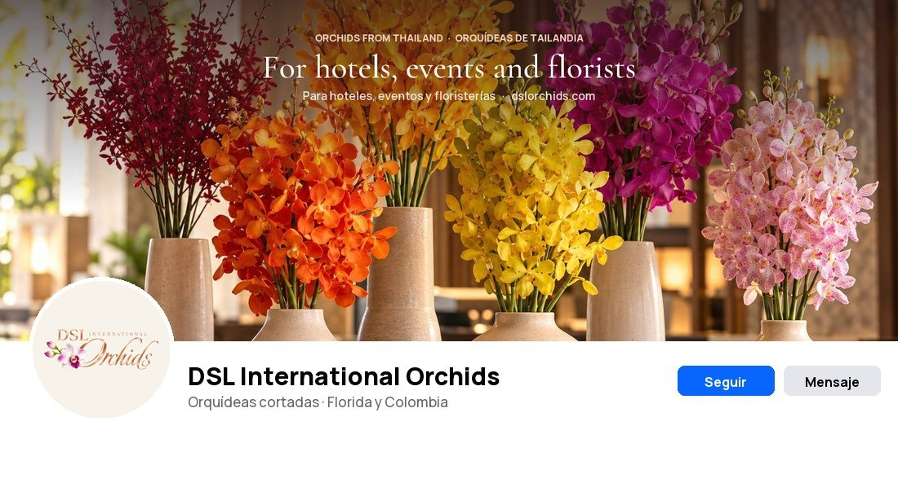
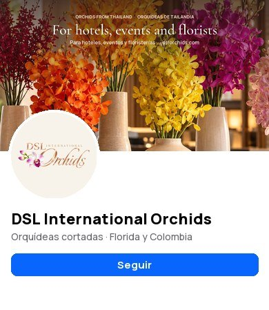
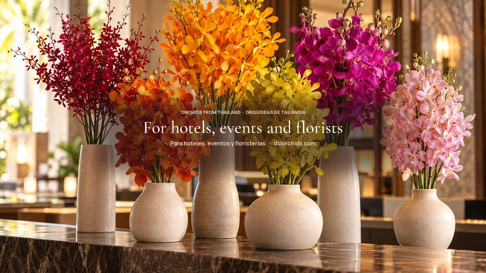

DSL International Orchids · Redes sociales
Como la foto de perfil será el logo completo, la portada no lo repite: muestra las orquídeas y una frase corta en inglés y español. Abajo, cada opción tal como se vería en Facebook (computador y celular) y su versión para el canal de YouTube.
Misma foto y misma frase de la portada de dslorchids.com, sobre el fondo marfil. Se siente tranquila y de marca.



Muestra variedad y uso en hoteles y eventos. Más llamativa y comercial.



Son maquetas aproximadas: el nombre de la página, los botones y los recortes exactos dependen de cada red. Elijan la opción 1 o la 2 y con eso la dejamos puesta en Facebook y YouTube.